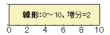
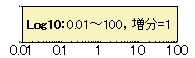
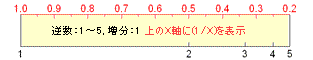
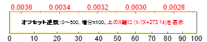
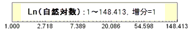
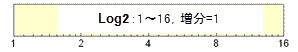
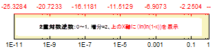

関連する動画は: Use Tick Location From a Dataset, User-Defined Arbitrary Tick Positions
関連する動画は: Use Tick Location From a Dataset, User-Defined Arbitrary Tick Positions
| 水平方向 | デフォルトでは、下X軸および上X軸です。 ただし、X軸とY軸を交換している場合(グラフ操作：X軸とY軸の交換)や、グラフの種類が横棒、浮動横棒、積み上げ横棒の場合は(左または右の)Y軸を表します。 |
|---|---|
| 垂直方向 | デフォルトでは、左Y軸および右Y軸です。 ただし、X軸とY軸を交換している場合(グラフ操作：X軸とY軸の交換)や、グラフの種類が横棒、浮動横棒、積み上げ横棒の場合は(下または上の)X軸を表します。 |
| Z軸 | デフォルトでは、前Z軸および後Z軸です。2Dグラフでは、このオプションは表示されません。 |
軸の属性を編集し終えたら、軸選択リストボックスから適切なアイコンを選択して、グラフの別の軸を編集することができます。選択した設定をグラフに適用するのをやめるには、編集中に(適用ボタンを押す前に)キャンセルボタンをクリックします。
このテキストボックスに開始値をセットします。
このテキストボックスに最終値をセットします。
| 線形 | 標準的な線形スケール、 X'=X  |
|---|---|
| Log10 | 常用対数スケール（底が10の対数）、 X'=log(X)  |
| 確率 | 累積ガウス分布の逆を表します。X'=norminv(X/100) 累積ガウス分布は作図すると、通常、シグモイド曲線となります。 この曲線は、確率スケールを使うと直線として描くことができます。 確率はパーセントで表現されるので、全ての値は、0から100までの値に収まらなければなりません。 範囲は 0.0001 から 99.999までです。 |
| プロビット | 確率スケールと同様、シグモイド曲線を直線として作図します。 しかしこの場合、スケールは線形であり、刻み間隔は標準偏差となります。 例えば、スケール内で「5」の位置は平均（50%の確率）を表します。 「6」は平均から標準偏差1つ分離れた所を表します。 |
| 逆数 | 逆数スケール X'=1/X  |
| オフセット逆数 | オフセット逆数スケール。これはX'=1/(X+offset)です。 オフセットは、273.14で定義され、273.14は0° Cに対する絶対温度です。  |
| ロジット | ロジット logit= ln(Y/(100-Y))。 確率スケールやプロビットスケール同様、シグモイド(Ｓ字形)曲線を直線として作図します。 |
| 自然対数 ln | 自然対数スケール(基数eの対数スケール)  |
| log2 | X'=log2(X)。基数が2の対数のスケールタイプです。  |
| 2重対数逆数 | 2重対数逆数スケール、X'=ln(-ln(1-X))  |
| 常用対数スケールについて :
対数軸のスケールが1区間以内の場合、刻みとグリッド線は線形になります。 LabTalkのシステム変数である@TL が、次の関係により線形にするかどうかを決めます。 10 * log10(最大値/最小値) <= 値 つまり、2区間に対して線形の軸刻みを使用する場合、この変数を14に設定します。 例えば、スクリプトウィンドウに次のように入力することができます。 @TL = 14 ; @TLのデフォルト値は10です。 |
| 手動 | これを指定すると軸を再スケールすることはできません。 スケールを直接変えたり、スケールの変更をきたすような操作 (例えば、ズームインツールボタンの使用など) を実行した場合、Originは開始と終了の値を固定します。 ある2Ｄレイヤ内の両方の軸が手動方式に設定されている場合に、「軸拡大図ツール」ボタンを押すと、ノーマル方式に変更して再スケールしてよいかどうかを確認をするダイアログボックスを開かれます。 ｢はい｣ボタンをクリックすると、スケールの制限が一時的に無視されます。 |
|---|---|
| 正規分布 | 軸を再スケールすることが可能です。 スケールを変更したり、(2Dレイヤで)「ズームイン」ツールボタンを使うことが、制限を受けることなくできます。 |
| 自動 | この方式はノーマルと同様、ユーザがスケールの変更をすることを許しますが、さらに、Originが必要に応じて、軸をデータ全体が表示されるように自動的に再スケールすることを、許します。 |
| 初期値固定 | 「軸」ダイアログボックスの『から』で指定される軸の初期値を固定し、変更不可能にします。つまり、軸は常に同じ位置から開始されて表示されます。 |
| 最終値固定 | 「軸」ダイアログボックスの『まで』で指定される軸の最終値を固定し、変更不可能にします。つまり、軸は常に同じ位置で終わるように表示されます。 |
対応するテキストボックスで軸の主刻みの増分を指定するには、このラジオボタンを選択します 主刻みラベルは主刻みに表示されます。 例えば、軸に10ごとに主刻みを付けるには 10 を入力します。
軸のスケールの単位が時系列の場合、『増分』テキストボックスの値には、適切な時系列の表現が使用されていなくてはなりません。 下の表に、指定可能な時系列の増分の単位と、その略号を示します。
| 増分 | 略号 |
|---|---|
| sec (秒) | s |
| min(分) | m |
| hour(時) | h |
| day(日) | d |
| week (週) | w |
| month(月) | mo |
| quarter (四半期) | (q) |
| year(年) | y |
グラフが時系列を表す場合は、数値に増分の単位 (または、その略号) を添えて、増加の大きさを指定します。 例えば 1month は主軸の増分を1ヶ月に設定します。 4Q は主軸の増分を4四半期 (つまり1年) に設定します。 (数字と増分の単位の間にスペースを入れないで下さい。)
軸に表示される主刻みの個数を指定するには、このラジオボタンを選択します。 テキストボックスに希望の値を入力します。 主刻みの最大数は｢オプション｣ダイアログボックス（ツール：オプション）の軸タブで制御できます。ここで設定した目盛りの数が表示されるとは限りません。Originは合理的な目盛りの数を表示しようとします。
| Notes: これは主目盛の数にマイナスの値を指定する事もできます。するとラベル番号は四捨五入されます。マイナスの主目盛数を設定する場合、Originは目盛ラベルに撮って最適な範囲を設定します。目盛の値が整数になるように調整し、目盛りの数は指定された値に可能な限り近づけます。 |
隣り合う主目盛の間に表示する副目盛の数を指定するには、 「副刻みの数」テキストボックスに副目盛の数を入力します。 例えば、増分ラジオボタンを選択して、1を対応するテキストボックスに入力し、副刻みの数テキストボックスに1を入力すると、副刻みの間隔が0.5に設定されます。 つまり、隣り合う主刻み間に一つの副刻みが表示されます。
軸のスケールの単位が時系列を表す場合、Originは「副刻みの数」テキストボックスの値に基づき、適切な副目盛ラベルを自動的に決定します このオプションは、｢軸｣ダイアログボックスの副目盛ラベルタブにある副目盛ラベルの表示チェックボックスにチェックがされている時のみ使用可能です。
最初の軸刻みテキストボックスに最初の主刻みの位置を指定します。 このテキストボックスへの入力は必須ではありません。 暦通りの日付データを刻みラベルに使用する場合、最初に表示する主刻みラベルの値を指定して、それに従って副刻みの値を表示したいということがあります。
例えば、X軸の範囲が06/1/1から06/12/31で、最初の主刻みラベルを06/1/2にし、それに続く副刻みをすべて月曜日に表示したい場合があります。
最初の刻みテキストボックスを編集するには、次のように記入します。
日付を使用する場合、Originは一般的な日付の表記を使います。 例えば、99/1/4(月)から始まり、その副刻みが火曜日で始まるような軸を作成するには、『最初の軸刻み』テキストボックスに、以下のような日付表記を入力します。（日本語版：これは日本語版での日付フォーマットで、言語に依ります。）
99/1/4, 月曜日
99-1-4, 月
1999年1月4日月曜日
既存のデータセットを使って、主刻みの位置を指定します。左側にあるチェックボックスにチェックして、この項目をアクティブにします。
既存のデータセットを使って、副刻みの位置を指定します。左側にあるチェックボックスにチェックして、この項目をアクティブにします。
| このグループの設定は、刻みの位置を指定するためだけに使用します。これらの位置に表示されることを指定するには、軸ダイアログの軸目盛りのラベルタブ に切り替えます。詳細な情報については、このヘルプページを参照してください。 |